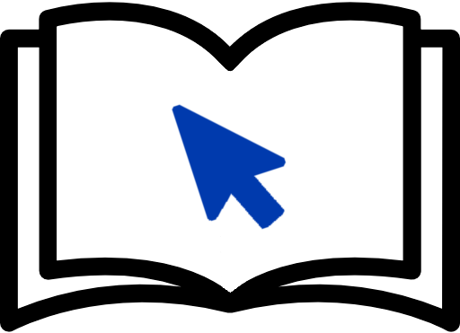

<div class="start_flex">
    <div class="outer_flex">
        <div class="logo_left">
            
            <div class="logo_text">
                <p class="main_text">LiGo</p>
                <p class="sub_text">Literaturwissenschaftliche</p>
                <p class="sub_text">Grundbegriffe</p>
                <p class="sub_text">online</p>
            </div>
        </div>
        <div class="separator_mid">
            <div class="vertical_separator"></div>
            <div class="horizontal_separator"></div>
        </div>
        <div class="text_buttons_right">
            <div class="start_text">
                LiGo ist ein Selbstlernkurs zu literaturwissenschaftlichen Grundbegriffen.<br/>
                Lassen Sie sich neue Begriffe erklären und anhand von Beispielen demonstrieren.<br/>
                Überprüfen und vertiefen Sie Ihr Wissen anschließend mit interaktiven Übungen und Tests.<br/>
                Hinweise zum Aufbau und zur Benutzung der Seite finden Sie im Bereich <span class="italic">Über LiGo</span>.
            </div>
            <div class="inner_flex">
                <div><a href="{{'_pages/hauptauswahl/wissensbereiche.html' | relative_url}}" class="button-m">Wissensbereiche</a></div>
                <div><a href="{{'_pages/hauptauswahl/verzeichnisse.html' | relative_url}}" class="button-m">Verzeichnisse</a></div>
                <div><a href="{{'_pages/hauptauswahl/ueber_ligo.html' | relative_url}}" class="button-m">Über LiGo</a></div>
                <div><a href="{{'_pages/hauptauswahl/tests.html' | relative_url}}" class="button-m">Tests</a></div>
            </div>
        </div>
    </div>
</div>